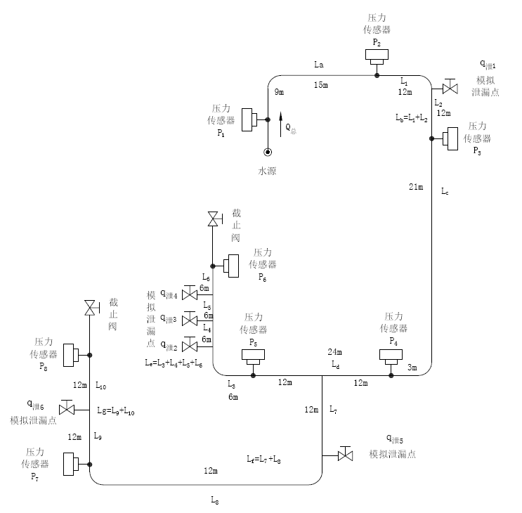

<!DOCTYPE html>
<html lang="en">
<head>
	<meta charset="UTF-8">
	<title>Demo</title>
	<style>
		#zoom_container_area {
			clear: both;
			width: 100%;
			height: 800px;
		}

		.landmarks {
			position: absolute;
			z-index: 10;
			top: 0;
			left: 0;
			font-size: 16px;
			color: #ffffff;
		}

		.landmarks .item {
			position: absolute;
			text-align: center;
			display: none;
		}

		.landmarks .mark .text {
			background: none;
			width: 180px;
			margin-bottom: 3px;
		}

		.landmarks .mark .text div {
			padding: 8px 6px;
			background-color: #000000;
			border-radius: 3px;
			text-align: left;
		}

		.landmarks .mark .text div p {
			margin: 10px;
		}

		.landmarks .mark img {
			cursor: pointer;
			width: 32px;
			height: 32px;
		}

		.landmarks .mark .text img {
			position: absolute;
			top: -7px;
			right: -7px;
			width: 24px;
			height: 24px;
		}

		.landmarks .mark .text div.viewBtn {
			text-align: center;
		}

		.landmarks .mark .text div.viewBtn span {
			padding: 3px 15px;
			border-radius: 3px;
			background-color: #dddddd;
			color: #000000;
			text-align: center;
			cursor: pointer;
			margin-right: 4px;
			margin-left: 4px;
		}
	</style>
</head>
<body>
<div id="zoom_container_area">
</div>
</body>
<script src="js/jquery.min.js"></script>
<script src="js/jquery.smoothZoom.min.js"></script>
<script src="https://cdn.bootcdn.net/ajax/libs/sockjs-client/1.5.1/sockjs.min.js"></script>
<script src="https://cdn.bootcdn.net/ajax/libs/stomp.js/2.3.3/stomp.min.js"></script>
<script>
    $(document).ready(function (options) {

            const flowMap = {
                1: [312, 139], 2: [535, 44], 3: [713, 194],
                4: [557, 461], 5: [356, 473], 6: [371, 375],
                7: [46, 657], 8: [46, 505]
            }

            const leakageMap = {
                "2-3": [614, 127], "5-6": [303, 493],
                "4-7": [458, 647], "7-8": [127, 583]
            }


            const flow = [
                {
                    id: 1,
                    flow: 0.3,
                    pressure: 200
                },
                {
                    id: 2,
                    flow: 0.2,
                    pressure: 204
                }
            ]

            const leakage = [
                {
                    previous: 2,
                    next: 3,
                    status: 2
                },
                {
                    previous: 5,
                    next: 6,
                    status: 2
                },
                {
                    previous: 4,
                    next: 7,
                    status: 1
                }
            ]
            let $zoom_container_area = $('#zoom_container_area');

            var html = `
                        <div class="landmarks" data-show-at-zoom="100" data-allow-drag="true">`;

            buildTip(flow);
            buildAlarm(leakage);
            html += `</div>`;
            console.log(html);
            $zoom_container_area.html(html);

            $('#map1').smoothZoom({
                zoom_BUTTONS_SHOW: false,
                pan_BUTTONS_SHOW: false,
                pan_LIMIT_BOUNDARY: false,
                button_ICON_IMAGE: 'img/icons.png',
                container: 'zoom_container_area'
            });

            let sock = new SockJS('/notify');
            let stompClient = Stomp.over(sock);
            stompClient.debug = null
            stompClient.connect({}, (frame) => {//连接WebSocket服务端
                //通过stompClient.subscribe订阅/topic/getResponse 目标(destination)发送的消息
                stompClient.subscribe('/topic/', (response) => {
                    //发现消息进入    开始处理前端触发逻辑
                    const message = JSON.parse(response.body);
                    console.log(message);
                    if (message.code === 200) {
                        let $zoom_container_area = $('#zoom_container_area');

                        html = `
                        <div class="landmarks" data-show-at-zoom="100" data-allow-drag="true">`;

                        setSysInfo(message.data.sysInfo);
                        buildTip(message.data.flow);
                        buildAlarm(message.data.leakage);
                        html += `</div>`;

                        $zoom_container_area.empty().html(html);

                        $('#map1').smoothZoom({
                            zoom_BUTTONS_SHOW: false,
                            pan_BUTTONS_SHOW: false,
                            pan_LIMIT_BOUNDARY: false,
                            button_ICON_IMAGE: 'img/icons.png',
                            container: 'zoom_container_area'
                        });
                    }
                });
            });

            function buildTip(flow) {
                for (let f of flow) {
                    let point = flowMap[f.id];
                    html += `
                    <div class="item mark" data-position="${point[0]},${point[1]}" data-show-at-zoom="0">
                        <div>
                            <div class="text">
                                <div>
                                    <p>当前流量：${f.flow} m3/s</p>
                                </div>
                            </div>
                        </div>
                    </div>
                    `
                }
            }

            function buildAlarm(leakage) {
                for (let l of leakage) {
                    let point = leakageMap[l.previous + "-" + l.next];
                    let src = l.status === 2 ? 'img/doubt.png' : 'img/abnormal.png'
                    html += `
                    <div class="item mark" data-position="${point[0]},${point[1]}" data-show-at-zoom="0">
                        
                    </div>
                    `
                }
            }

            function setSysInfo(sysInfo) {
                let point = flowMap[sysInfo.no];
                html += `
                    <div class="item mark" data-position="${point[0]},${point[1]}" data-show-at-zoom="0">
                        <div>
                            <div class="text">
                                <div>
                                    <p>稳定压力：${sysInfo.standard} bar</p>
                                    <p>当前压力：${sysInfo.current} bar</p>
                                </div>
                            </div>
                        </div>
                    </div>`
            }
        }
    )
</script>
</html>

